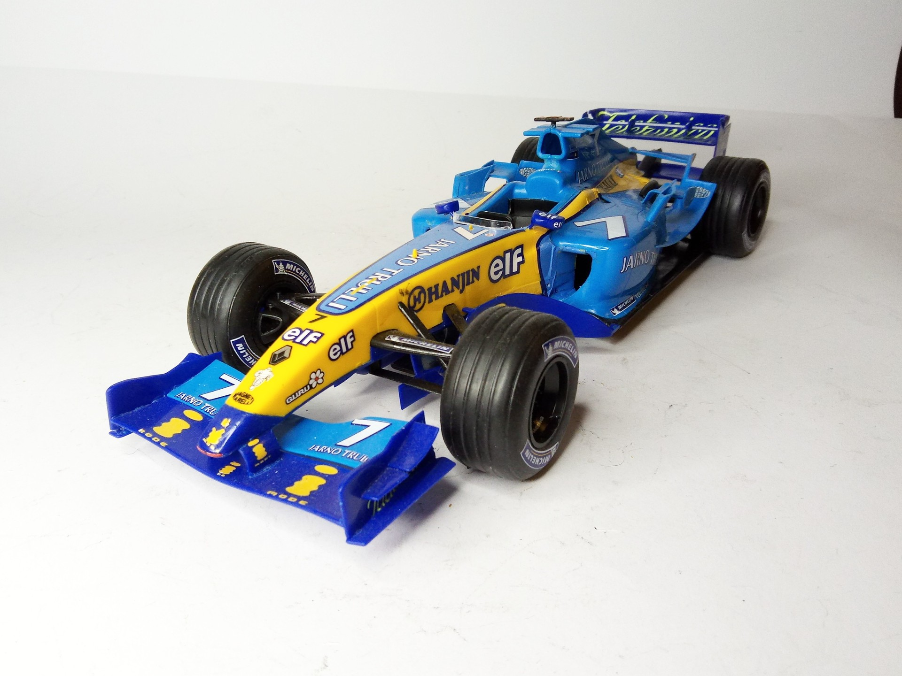
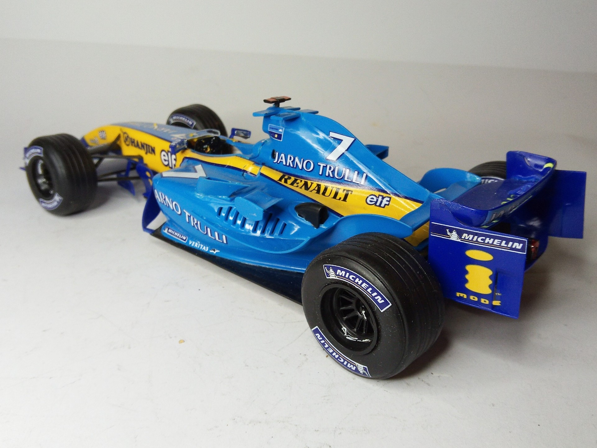

Auto e veicoli stradali · scale model archive
Renault F1 2004
Renault F1 2004 — Kit: Revell, Scale: 1/24. 2003 F1 season 7 Jarno Trulli #1/24 #Heller #RenaultF1

Photo gallery

English description
2003 F1 season 7 Jarno Trulli
#1/24 #Heller #RenaultF1
Descrizione italiana
Stagione F1 2003, 7 Jarno Trulli.